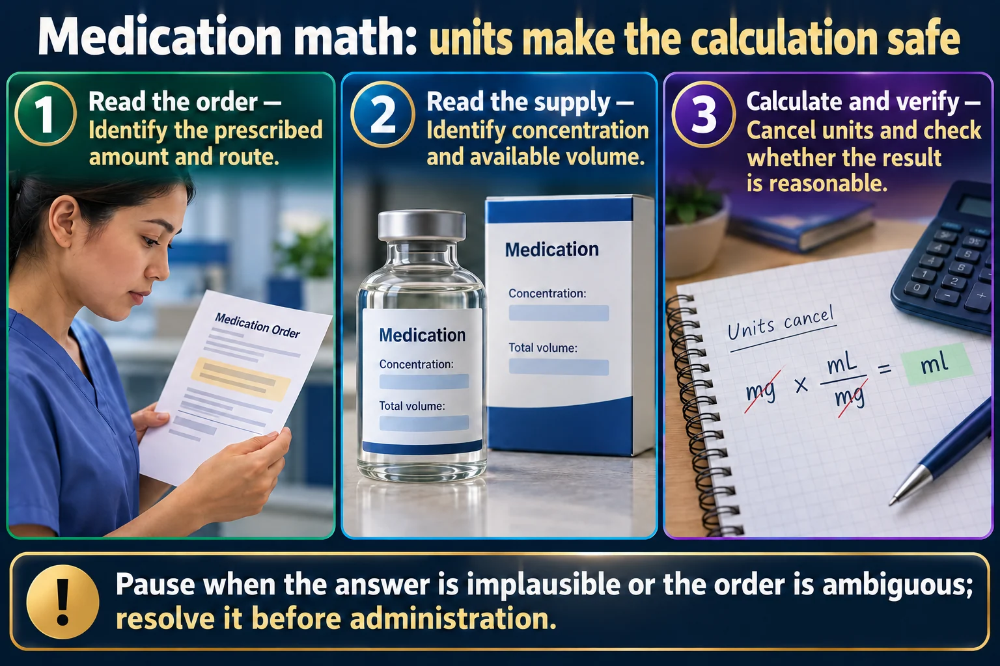

Memory Tricks for Dosage Calculation
Three formulas run almost every med-math question you'll ever see: D/H×Q for tablets & liquids, mL/hr for pumps, and gtt/min for gravity tubing. Learn the formula, learn where the numbers plug in, and always convert your units first.
📄 Simple Nursing original — opens in Drive →
Almost every dosage-calc question on the NCLEX is one of these three formulas wearing a different costume.
USE FOR tablets, capsules, and oral/IM liquids — anything where the drug comes in a fixed strength and you need to figure out how many units to give.

Pause when the answer is implausible or the order is ambiguous; resolve it before administration.
Read the order
Identify the prescribed amount and route.
Read the supply
Identify concentration and available volume.
Calculate and verify
Cancel units and check whether the result is reasonable.
Dose volume
Desired dose divided by concentration gives the required volume.
Infusion rate
Volume divided by time gives mL/hour when units are aligned.
Safety checks
Use kilograms when required, leading zeros and no unnecessary trailing zeros.
USE FOR anything running on an electronic infusion pump — you program the rate directly in mL per hour.
USE FOR manual/gravity tubing with no pump — you count drops falling in the drip chamber per minute.
Many pediatric doses, and adult doses ordered as "per kilogram," use mg/kg or mcg/kg/min. You must find the total dose before you can use D/H×Q.
Some high-alert doses (chemotherapy, certain pediatric meds) are ordered per m² of body surface area instead of per kilogram, because BSA correlates better with organ function and drug clearance.
The same five formulas, now with numbers plugged in step by step. All example numbers below are made up for practicing the math only — not real drug orders.
Because 60 minutes is always the denominator, common drop factors simplify to one quick division of mL/hr:
| Drop factor | Tubing type | Shortcut from mL/hr |
|---|---|---|
| 10 gtt/mL | Macrodrip | gtt/min = mL/hr ÷ 6 |
| 15 gtt/mL | Macrodrip | gtt/min = mL/hr ÷ 4 |
| 20 gtt/mL | Macrodrip | gtt/min = mL/hr ÷ 3 |
| 60 gtt/mL | Microdrip | gtt/min = mL/hr (1:1) |
Every formula above only works if D and H are already in the same unit — convert before you calculate, not after.
Same rule for volume: 1 L = 1000 mL. And for weight: 1 kg = 2.2 lb — lb → kg, divide by 2.2; kg → lb, multiply by 2.2.
A misread or miswritten unit — mcg mistaken for mg — is a 1000× dosing error. High-alert IV drips are especially at risk because they're often dosed in mcg/kg/min.
Calculating a weight-based dose using pounds instead of kilograms gives an answer that's roughly 2.2× too high. Always convert weight to kg before multiplying by mg/kg.
Using gtt/min math when the fluid is actually running through an electronic pump (or vice versa) gives a nonsense rate. Pump screens want mL/hr; gravity tubing needs a drop count.
Using 15 gtt/mL math on 60 gtt/mL microdrip tubing (or the reverse) throws the whole answer off. The drop factor is printed on the tubing package — never assume it.
Insulin, heparin, IV opioids, chemotherapy, and other high-alert drugs typically require an independent double-check by a second RN before administration — regardless of how confident you are in your own calculation. Correct math does not replace a required double-check.
Saved study graphics from your own collection. Each one is someone else’s work — check anything clinical against your course materials before you rely on it.